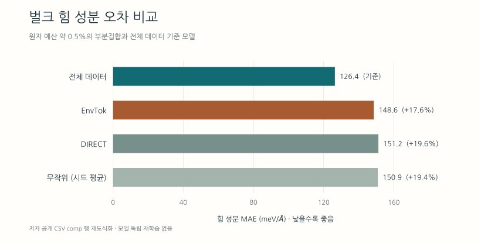

OMat24 데이터 중복성과 국소 화학 환경을 이용한 학습 집합 압축
OMat24 압축 실험으로 살펴본 원자 환경의 다양성, 예측 오차와 고정밀 계산의 배분
내용 살펴보기
이 논문은 대규모 재료 학습 데이터의 압축 가능성을 설득력 있게 보여준다. 다만 99%는 특정 데이터셋과 평가 조건에서 붙인 요약이며, 모든 분자·재료 데이터베이스에 적용되는 상수가 아니다. 실무적으로 검토할 가치는 비싼 계산을 어떤 구조에 배분할지 결정하는 데 있다. 데이터의 가치는 용도와 허용 오차를 함께 정해야 평가할 수 있다.
대상은 Evgeny Moerman, Igor Poltavsky, Anton Charkin-Gorbulin, Alexandre Tkatchenko의 「Atoms that Matter: Largest Materials Datasets Are 99% Redundant, and Local Chemistry Can Guide the Required 1%」다. 2026년 10월 9일 제출된 arXiv v1 프리프린트다. 논문 정보
어떤 데이터를 중복이라고 부르는가
OMat24는 에너지·힘·응력 등을 계산한 대규모 무기 재료 데이터셋으로, 원 배포는 1억 1천만 건 이상의 DFT 계산을 포함한다. 평형 구조에서 원자를 흔들거나 분자동역학으로 얻은 여러 배치를 포함하므로, 서로 다른 구조에서도 비슷한 원자 주변 환경이 반복될 수 있다. OMat24 원논문
여기서 구분할 것은 완전히 같은 레코드의 중복과 현재 모델의 성능을 개선하는 데 기여가 작은 추가 표본이다. 이 연구가 다루는 것은 후자다. 같은 환경의 작은 변형도 진동·탄성·정밀한 에너지 차이를 학습하는 데 유용할 수 있으므로, 중복성이 높다는 결과만으로 원본을 삭제할 근거가 되지는 않는다.
1퍼센트의 분모
실험은 f-block을 제외한 약 6,500만 구조·12억 원자에서 약 650만 원자를 선택했다. 같은 MACE 계열로 EnvTok, DIRECT, 무작위 부분집합을 학습하고, 전체 OMat24로 학습된 공개 기준 모델 MACE-OMAT-0 medium과 비교했다. 부분집합의 선별 모집단과 기준 모델의 원래 전체 학습자료 범위에는 이 차이가 있다. Methods II, SI S2
아래 비율은 공개된 부분집합 규모와 위의 근사 모집단으로 계산했다. 원자 수와 구조 수는 서로 다른 분모다. 공개 코드와 데이터 설명
| 선택법 | 구조 수 | 원자 수 | 원자 비율 | 구조 비율 |
|---|---|---|---|---|
| EnvTok | 795,721 | 6,566,253 | 약 0.55% | 약 1.22% |
| DIRECT | 458,754 | 6,532,238 | 약 0.54% | 약 0.71% |
| 무작위 4개 집합 | 356,247–356,249 | 약 650만 | 약 0.54% | 약 0.55% |
EnvTok은 선별 대상 풀의 구조 수로는 1%를 넘는다. 작은 셀로 다양한 환경을 담기 때문에 생기는 차이다. 비교를 설명할 때는 “원자 수 기준 약 0.5%의 부분집합”이라는 표현이 가장 명료하다. 원자 수를 맞추는 것은 합리적인 예산 기준이지만, 실제 DFT 시간은 전자구조·셀 크기·수렴 난이도에도 좌우되므로 비용을 완전히 같게 만드는 통제는 아니다.
EnvTok은 무엇을 골라내는가
EnvTok은 원소, 자기상태, 이웃 원소, 배위다면체, 왜곡, 결합 압축, 비대칭을 토큰으로 만들고 환경을 덮는 구조 집합을 고른다. 에너지·힘 라벨과 사전학습 힘장이 필요 없으며 자기모멘트는 선택적으로 쓴다. Methods II와 Fig. 1
이를 데이터베이스 설계 관점에서 보면 각 구조를 하나의 덩어리로 비교하는 대신, 그 안에 어떤 화학 환경이 들어 있는지 묻는 방식이다. 새로운 구조라도 이미 충분히 본 환경만 담고 있다면 우선순위를 낮출 수 있다. 반대로 드문 환경을 담은 구조는 작아도 높은 가치를 가질 수 있다.
그러나 같은 토큰이 같은 물리를 보장하는 것은 아니다. 구간으로 나눈 표현은 경계 안의 차이를 압축한다. 장거리 상호작용이나 더 먼 이웃, 전자상태가 목표 물성에 중요하다면 표현과 평가 항목을 함께 확장해야 한다. 환경 종류를 고르게 포함하는 것과 각 환경 주변의 곡률을 정밀하게 배우는 것도 별도의 요구다.
성능은 얼마나 유지되는가

| 평가 | 전체 데이터 모델 | 부분집합 모델 |
|---|---|---|
| 벌크 힘 성분별 MAE, meV/Å | 126.4 | EnvTok 148.6, DIRECT 151.2, 무작위 평균 150.9 |
| 형성에너지 MAE, meV/atom | 56 | 63–74 |
| MD 평균 진행률 | 75% | EnvTok 92%, DIRECT 93%, 무작위 81% |
| Li 이동장벽 MAE, eV | 0.146 | EnvTok 0.124, DIRECT 0.116, 무작위 0.148 |
힘은 공개 집계 CSV의 comp 행이다. 벡터 오차 크기의 평균인 norm 행과 혼용하면 안 된다. EnvTok 형성에너지 MAE는 공개 결과 CSV의 유효한 466개 결과에서 재계산하면 62.7 meV/atom이다. 이는 저자의 결과 파일을 이용한 산술 확인이며 모델의 독립 재학습은 아니다.
나머지 수치는 논문 보고값이다. MD는 80개 계를 10 ps 동안 300→3000 K, 0→500 GPa로 변화시킨 시험이다. 92·93%는 평균 진행률이며, 끝까지 완료한 실행 비율은 각각 68·64%다. Li 비교는 Hubbard U 적용 차이가 없는 621개 경로 집단에서 모델별 비수렴 약 3–4%를 제외한 결과다. 이 집단에도 기준값의 비자성 PBE와 학습자료의 스핀 분극 PBE 차이는 남는다. Fig. 2–3와 Table II, Li 평가 절차
힘 오차는 약 18–20%, 형성에너지 오차는 약 13–32% 증가한다. 따라서 결과의 가치는 데이터 축소와 허용 오차의 교환 관계에 있다. 작은 에너지 차이로 후보를 순위화하는 작업이라면 이 정도 증가도 의사결정에 중요할 수 있다. MD 진행률이 높다는 사실은 수치적 붕괴에 관한 증거이며, 실제 궤적이나 상변화가 DFT와 맞는지 판단하는 증거와는 구별해야 한다.
연구의 기여와 해석의 한계
재료 데이터의 중복성 자체는 선행연구가 있다. Li 등의 2023년 연구는 여러 재료 물성 데이터에서 최대 95%를 제거해도 분포 내 예측 성능의 변화가 작을 수 있고, 과대표집된 데이터가 분포 밖 성능 저하를 해결하지 못한다고 보고했다. 저자기관 NIST의 연구 소개
DIRECT도 사전학습 표현을 차원축소·군집화해 구조를 추출하는 방법을 이미 제안했다. DIRECT 원논문
이번 연구는 이 질문을 OMat24 규모로 확장하고 여러 사용 목적을 함께 평가한다는 점에서 가치가 있다. 아래는 그 결과에 대한 리뷰의 판단이다.
- 무작위 기준선이 강하다는 점이 핵심이다. 정교한 선별법만 좋은 결과를 냈다면 알고리즘의 능력과 데이터의 중복성을 분리하기 어렵다. 무작위 부분집합도 상당한 성능을 유지했다는 사실은 데이터 효율성 문제를 더 직접적으로 드러낸다. 동시에 EnvTok이 모든 물성에서 최선이라는 결론은 약해진다.
- 데이터량의 순수한 인과 효과까지 분리한 비교는 아니다. SI S3에는 전체 기준 모델과 부분집합 모델의 유효 배치 크기·수치 정밀도·학습 절차 차이가 명시된다. 동일한 계산 예산과 최적화 절차에서 다시 비교하면 데이터 구성과 학습 효과를 더 명확히 나눌 수 있다.
- 평균 성능과 드문 실패를 함께 봐야 한다. 큰 평균오차가 일부 실패에 좌우되는지, 일반적인 사례도 악화되는지에 따라 사용할 모델이 달라진다. 전체 모델보다 작은 평균오차만으로 각 사례에서 더 안전하다고 판단할 수 없다.
- 선택법의 독립성과 검증의 일반성은 다르다. 모델 없이 집합을 선택할 수 있어도, 다양한 모델 구조에서 같은 압축률과 성능을 얻는지는 별도로 시험해야 한다.
분자 데이터 OMol25·QCML의 비슷한 중복성은 결론에서 후속 연구로 남겨 둔다. Conclusions 따라서 분자·OLED·여기상태 데이터에 99%라는 값을 그대로 옮기는 것은 이 논문의 실증 범위를 넘어선다.
데이터 구축에 적용할 방법
다음은 논문의 결과를 바탕으로 한 적용 제안이다. 목표는 미리 정한 압축률을 달성하는 것이 아니라, 연구 목적에 필요한 정확도를 적은 라벨로 달성하는지 확인하는 것이다.
- 목표 물성과 허용 오차를 먼저 정한다. 힘장, 에너지 순위, 이동장벽, 여기상태 예측은 서로 다른 평가를 요구한다.
- 같은 원자·계산 예산에서 기준선을 비교한다. 무작위 추출, 화학적 다양성에 따른 추출, 모델 불확실성에 따른 추출을 함께 평가한다.
- 비슷한 구조가 시험 집합으로 새어 들어가는지 통제한다. 같은 모체에서 나온 변형들은 함께 묶어 분할하고, 새로운 조성·골격·배위 환경을 별도로 시험한다.
- 평균오차와 함께 희귀 사례를 유지한다. 결함·압축·분해 경로 등 실제 실패가 중요한 조건은 별도 평가 집합으로 보존한다.
- 절약한 라벨 예산을 고정밀 계산과 연결한다. 일부를 높은 이론 수준으로 다시 계산해 목표 물성의 개선을 검증한 다음 확대한다.
유기발광분자에 적용한다면 골격과 입체배치뿐 아니라 목표로 하는 전하·스핀·여기상태, 분자 간 배치를 평가 설계에 포함하는 편이 타당하다. 국소 구조가 비슷하다는 이유만으로 관심 전자상태까지 같다고 취급하면, 압축 과정에서 연구에 필요한 차이를 잃을 수 있다.
또한 선별에도 계산비가 든다. 공개 코드 문서는 전체 토큰화 약 440 CPU node-days, 선택 단계 400 GB RAM, 학습 A100 8개×2일을 제시한다. 공개된 구조 ID 목록을 재사용하면 선별 과정을 생략할 수 있다. 공식 실행 안내 라벨 수 감소율을 전체 계산비 절감률로 해석하지 말고, 탐색·선별·라벨링·학습 비용을 합산해야 한다.
자료와 확인 범위
원문 본문·보충자료·주요 도표를 대조하고 공개 결과 CSV를 확인했다. EnvTok 형성에너지 평균오차, 힘 오차의 상대 증가율과 원자·구조 비율은 별도로 계산했다. DFT 계산과 모델 학습·MD는 재실행하지 않았다.
공개 코드는 위 commit으로 고정했다. Zenodo 데이터는 API 메타데이터에서 부분집합·모델·벤치마크 파일 목록을 확인했으며 전체 아카이브는 내려받지 않았다.